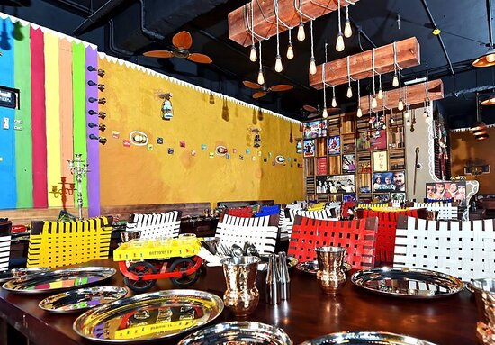

Mitra Di Mehfil
A dhaba is a roadside restaurant in the Indian subcontinent, primarily across Pakistan and India. They are on highways, generally serve local cuisine, and also serve as truck stops. They are most commonly found next to petrol stations, and most are open 24 hours a day.
Dhabas are a common feature on national and state highways. Earlier frequented only by truck drivers,today eating at a dhaba, whether urban or roadside, is a trend.Dhabas have additionally been established by South Asia diaspora communities in countries including the United States.
The simple vegetarian meal served could be a paratha of many kinds depending on the type of vegetable stuffing one wishes to have - the aloo parathas is the most popular. Parathas stuffed with cooked, mashed and spiced vegetables such as cauliflower are popular for breakfast with curds or tea. A vegetarian meal - for lunch or dinner - consists of chana masala, pindi chana, vegetables and lentils ,sarson ka saag, palak paneer, bharwan karela, subz korma, rajma or kadhi.
